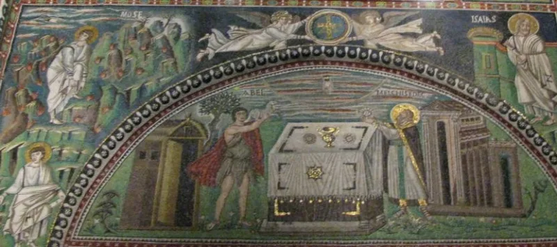

Alma 12–13 follows Hebrews, argument for argument
ContestedLDS scholars have a real answer here. Say so before your friend does.
What Alma 12-13 is
A sermon dated to about 82 BC. It is about priesthood "after the order of the Son," about Melchizedek, and about entering God's "rest."
What David Wright showed
That the sermon reproduces the argument sequence, the interpretive moves and the King James wording of Hebrews 3:7-4:11 and 7:1-4. Alma 13:17-19 tracks Hebrews 7:1-4 closely.
Scholars treat that Hebrews material as the author's own fusion of Genesis 14 and Psalm 110. No pre-Christian source contains it.
Their answer, at full strength
John Welch and the FARMS reviewers say both texts could draw on older Melchizedek traditions. Those traditions do exist: 11QMelchizedek and the Genesis Apocryphon, both from the Dead Sea Scrolls.
They add that the shared wording is translation register. And Alma's emphasis differs — repentance and ordination, rather than Christ's superiority.
Copying would not produce that.
How strong is this argument?
Genuinely arguable. Wright's verbal case has not been taken apart.
But the shared-tradition answer is a real alternative, even though no manuscript supports it directly. The parallels favour Wright.
They do not close it.
What to say
"Which older source has the Melchizedek argument Alma 13 uses?"



How they answer this — at its strongest
Both texts could draw on older Melchizedek lore, and the Dead Sea Scrolls hold some.
John W. Welch and the FARMS reviewers argue that Alma 13 and Hebrews could draw on the same older material. Melchizedek traditions are attested in Second Temple texts. 11QMelchizedek and the Genesis Apocryphon are two of them.
The shared King James wording, they say, is translation register. And Alma's treatment pulls a different way from Hebrews. Alma is about repentance and ordination. Hebrews is about Christ's superiority. Plain copying would not predict that.
The verdict
Leans your way, but their older-source answer is real and not yet ruled out.
Wright's word-by-word case is detailed. Nobody has taken it apart.
The shared-tradition reply is a real answer. But no manuscript holds the Alma 13 argument, so it stays a guess. And it does not simply grant that Alma leans on Hebrews.
The dispute is genuine. The parallels favour Wright. They do not close it.
Sources
- David P. Wright, '"In Plain Terms That We May Understand": Joseph Smith's Transformation of Hebrews in Alma 12–13,' in New Approaches to the Book of Mormon (Signature Books, 1994)
- Book of Mormon Origins commentary on Alma 13 (documents the parallels)